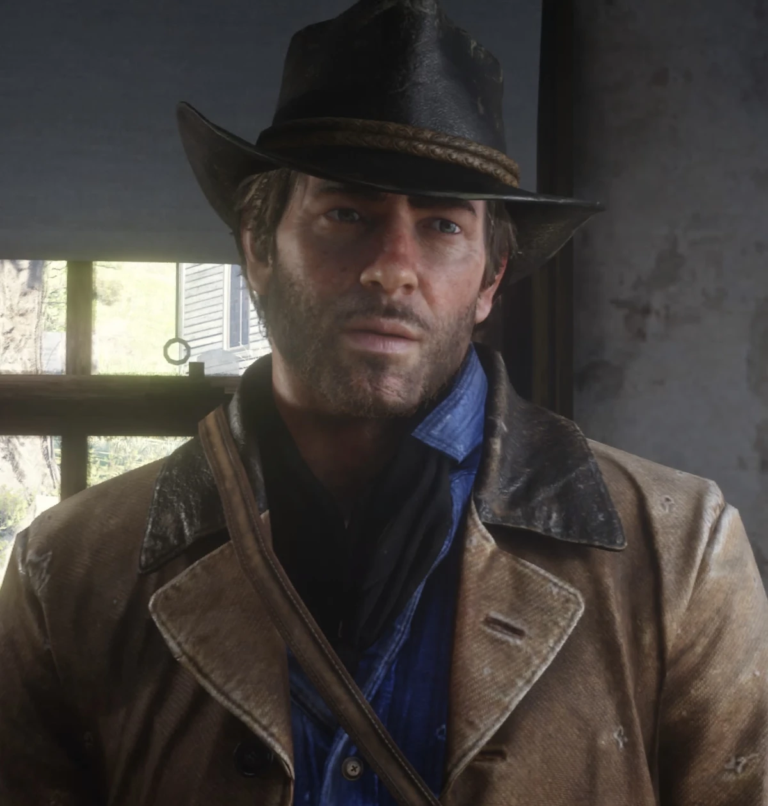
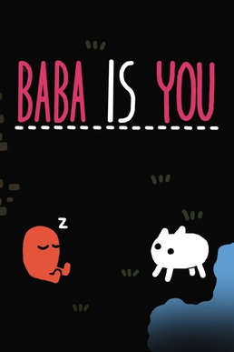
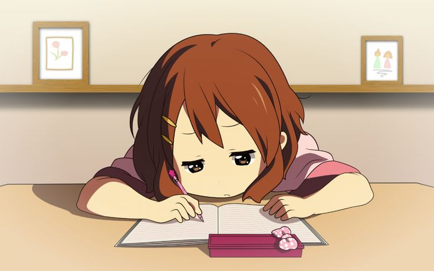

Sobre mí
Soy un estudiante de desarrollo de Software en formación, y estoy aprendiendo cómo crear páginas usando HTML y CSS, aunque hasta apenas estoy memorizando los términos. También me conocen como DARKSYLVEON777, mi meta es irme de Cúcuta y volverme un escritor reconocido dentro del mundo tan lindo del desarrollo.

"Imagen representativa del estudiante."
Galería de imagenes


Contenido multimedia
Video local (El mejor canal de Youtube que proximamente sera una celebridad.)
Video externo desde YouTube (¡Arreglado e incrustado correctamente, (antes no servia profesor y si sigue sin servir que problema con ese video por dios.))
Enlaces Útiles
Visita el buscador de Google
Aprende documentación en MDN Web Docs
Mi Gran Pasión: La Escritura Creativa
Además de pasar horas picando código en la pantalla, mi verdadera meta es convertirme en un escritor reconocido. Me encanta inventar historias complejas y desarrollar personajes profundos.
Pienso que la programación y la literatura se parecen mucho: ambas consisten en construir mundos enteros a partir de una hoja en blanco, cuidando cada pequeño detalle de la estructura.

Puedes leer excelentes consejos de narrativa visitando el portal de Wattpad.